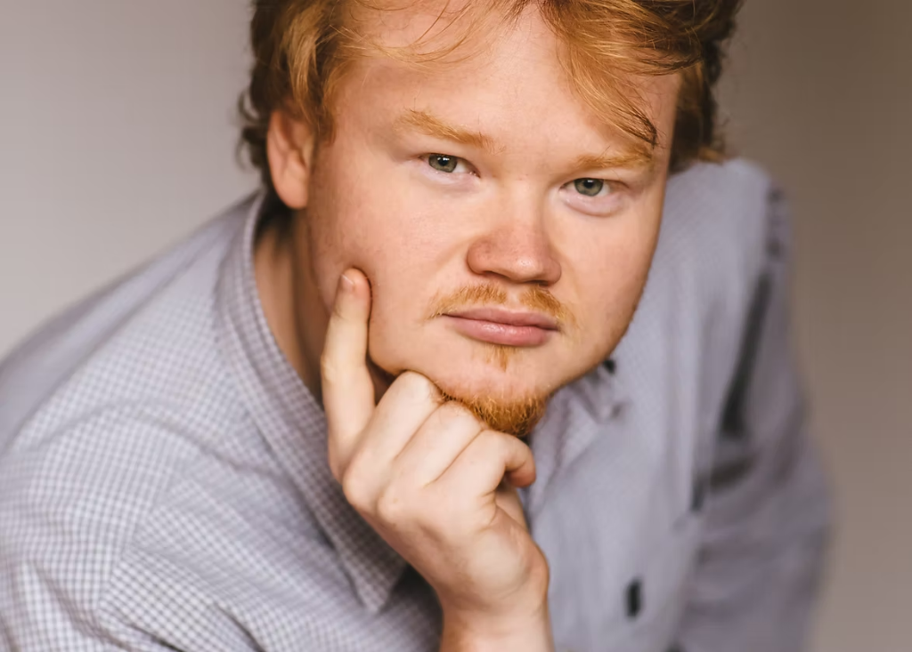

Aleksandre Karpov
B.A. in Architecture • Lund University (Sweden)

Dual Mastery: Analog Fine Art & Computational BIM
Aleksandre Karpov operates at the convergence of tactile architectural draftsmanship and advanced digital building information modeling. Raised with a rigorous foundation in classical drawing, watercolor plein-air representation, and structural sculpture, he approaches each project with visceral sensitivity to materials, topography, and natural light.
Parallel to this analog mastery, Aleksandre possesses extensive experience in computational building coordination, parametric modeling, and Revit/BIM management. He has led technical documentation across international commercial towers, complex mixed-use industrial regenerations, and bespoke mountain residences.
As principal of Karpov Design LLC, he provides complete residential design commissions and architectural consultation.
Academic Foundation
- UNC Charlotte: Bachelor of Arts in Architecture. Recipient of studio merit recognitions.
- Lund University (Sweden): Advanced sustainable urbanism and Nordic housing morphology.
- UNCC Innovative Housing Lab & Studio X: Research fellow prototyping mass-timber structural assemblies.
Software & Technical Stack
- Computational BIM: Autodesk Revit, ArchiCAD, Navisworks clash detection.
- Parametric & Form-Generation: Rhino 3D, Grasshopper, SketchUp Pro.
- Visualization & Media: Enscape, V-Ray, Lumion, Adobe Creative Cloud Suite.
- Analog Methods: Ink drafting, charcoal massing, watercolor rendering.
Competitions & Accolades
Eskişehir Industrial Regeneration (Multi-City)
51,000 m² municipal depot adaptive reuse into cultural and tech center.
Caferağa Community Center & Plaza
Civic cultural gathering venue, public library, and tiered urban courtyards.
Sivas Unity Bridge & Cultural Crossing
Inhabited civic bridge weaving public amphitheatres and active promenade.
UNC Charlotte School of Architecture
Bachelor of Arts in Architecture. Advanced digital lab fellow, Studio X.